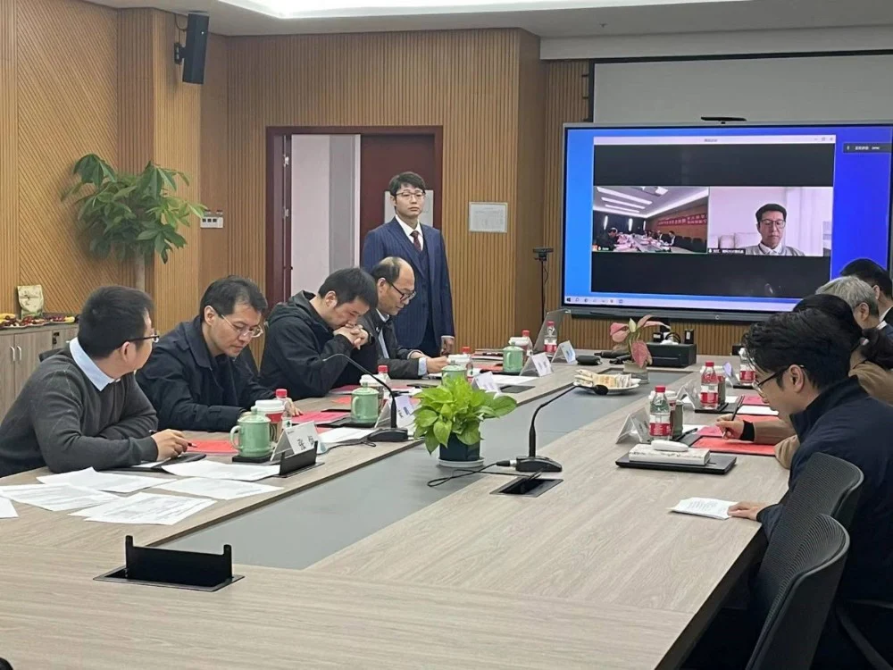
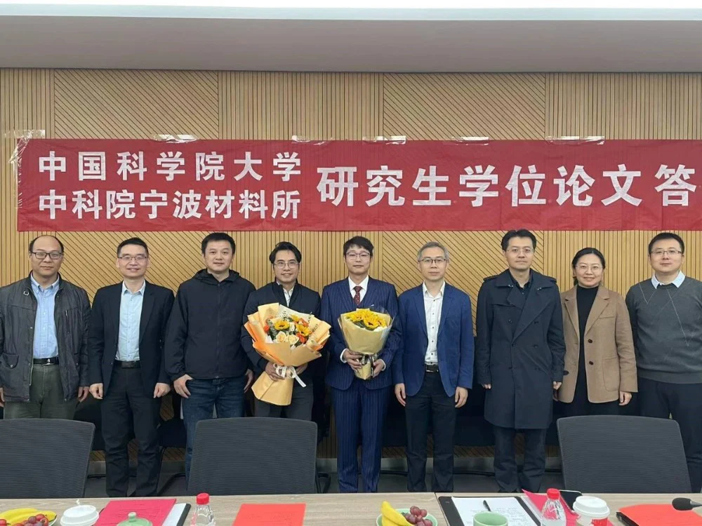

11月22日上午8点半，iMED团队的第四位博士生牟磊的论文答辩在慈溪生物医学工程研究所举行，广东省人民医院刘再毅教授担任答辩委员会主席，南京理工大学周涛教授、宁波市第二医院张景峰教授、宁波工程学院安鹏教授、中国科学院宁波材料技术与工程研究所李辉、李娟、张炯研究员为答辩委员会委员。中科院宁波材料所副研究员张炯担任答辩秘书。赵一天研究员和刘江教授作为指导老师在介绍阶段以指导老师列席会议。

按照答辩流程，赵一天研究员首先介绍了牟磊的基本情况，牟磊在2020年来到宁波iMED团队读博，研究方向是医学影像中血管状结构提取与分析，博士在读期间以第一作者身份在Medical Image Analysis、IEEE Transactions on Medical Imaging等高水平期刊发表论文3篇，并且有多篇论文在投。除卓越的学术成就外，牟磊在博士期间还在团队建设和科研生活氛围培育方面发挥了作用。他热心组织团队活动，丰富大家的业余生活，使团队关系更加紧密；他主动帮助新入组的同学熟悉环境，悉心传授实验技巧，让师弟师妹们快速成长；帮助老师营造开放向上、积极进取的工作氛围。
随后，牟磊向答辩委员会和在场观众做了主题为面向医学影像中血管状结构提取与分析的特征自相关方法研究的答辩报告。在45分钟的博士期间工作汇报演讲中，他系统的讲解了他在博士期间参与的主要工作，主要包含了四个研究内容，这四个研究内容分别基于特征自相关技术来实现多模态管状结构的分割与量化。分别是：1基于双重特征自相关的2D/3D血管状结构分割方法,2基于风格自一致性的3D脑血管泛化性分割方法，3 基于双线性特征自相关的角膜神经弯曲度分级方法，4 基于拓扑引导特征自相关的脑血管解剖结构标记方法。其中，前两个研究内容主要涉及对管状结构的精确分割，后两个内容涉及对分割的管状结构进行量化。其工作的丰富程度、创新性和逻辑上的严密性受到了在场专家和听众的一致认可。
在陈述完毕后，各位专家评议老师也针对论文的具体内容提出了相关的问题和建议。牟磊针对各位专家评议老师的问题和建议进行了回复和讨论，在此过程中思维碰撞产生的火花使在场的听众获益良多。
在随后的答辩委员会讨论环节中，经过各位专家的研究和投票，答辩主席刘再毅老师宣读答辩结果，牟磊顺利通过答辩，论文已经达到博士论文水平，建议授予其博士学位。在此热烈祝贺牟磊的博士求学生涯圆满结束，后续他将以博后的身份继续留在组里。希望他在接下来的学术研究和生活中一切顺利。我们衷心祝贺他并期待他学术道路上的新突破。也期待iMED团队的后起们效仿他的精神,在未来研究生涯中不断追求卓越。
